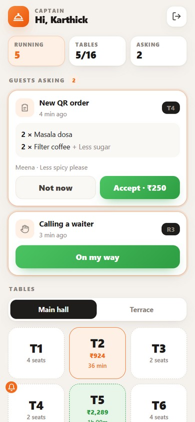
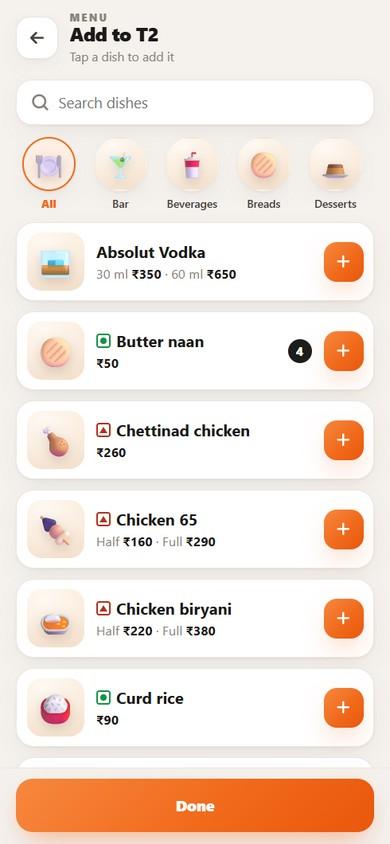
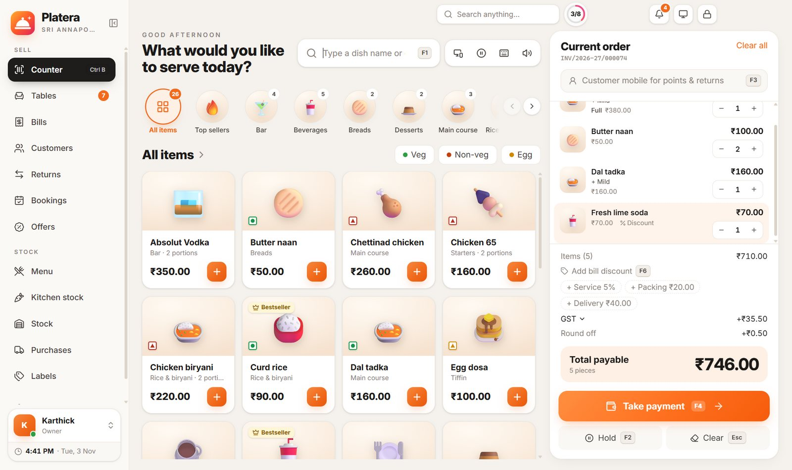
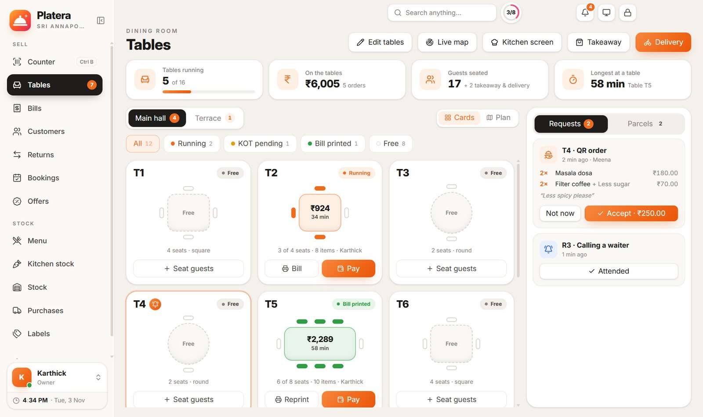
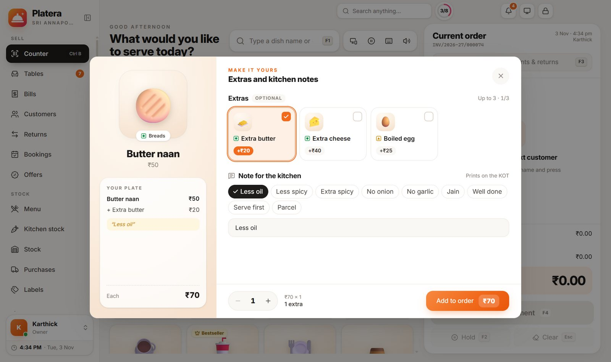
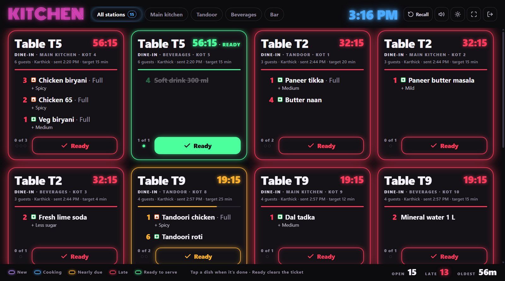
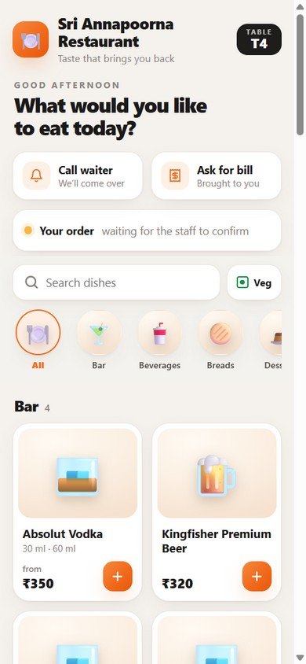
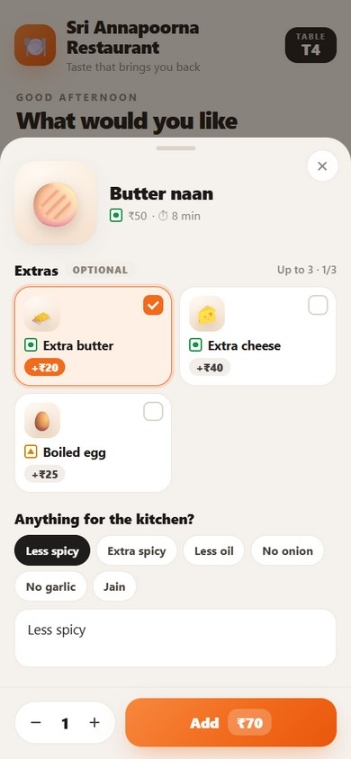
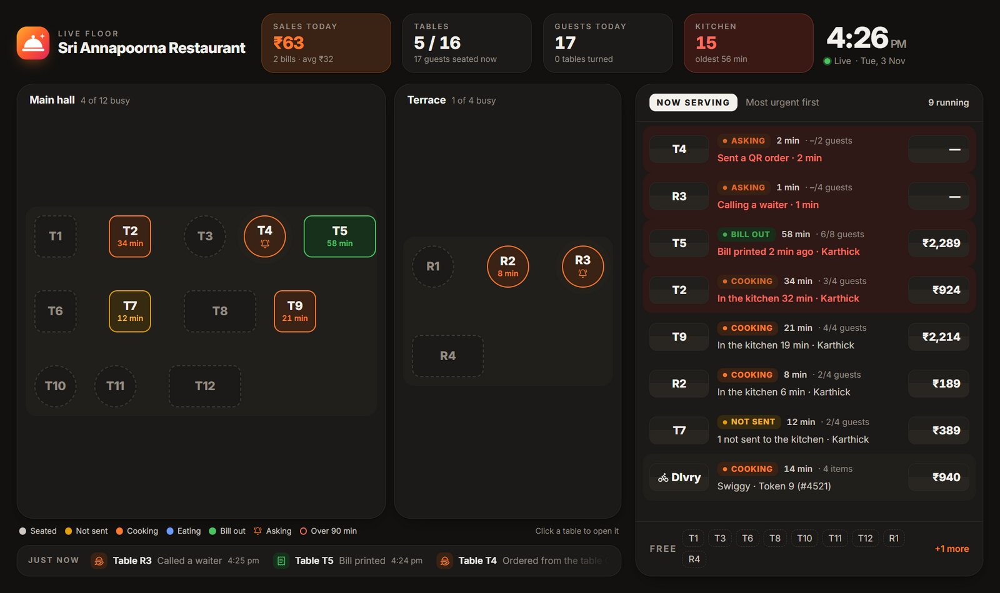
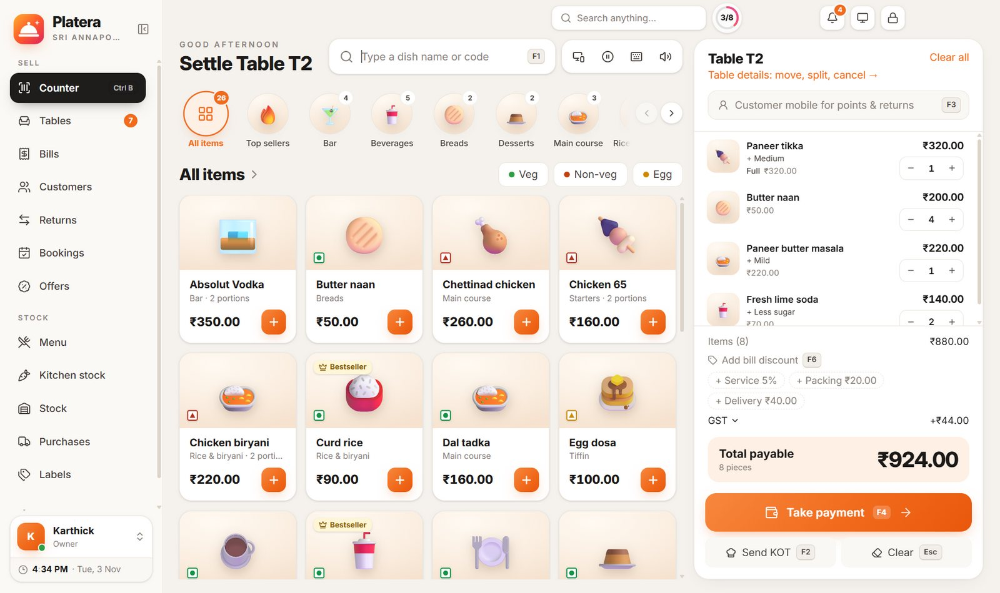

Captain app for waiters
Waiters sign in with their PIN, seat guests, add dishes with their add-ons and send the KOT from the table. Guest requests and bill-ready tables show up on their phone.
Restaurant billing that keeps up with the rush. Table bills, KOTs to every kitchen station, a kitchen screen, a waiter app and QR ordering from the table, all from one Windows PC, and it works 100% offline on your own Wi-Fi.

Each table shows its guests, its bill and how long they have been seated. Tap a seated table and its bill opens on the counter, ready to add a dish, send a KOT or take payment.


Put any TV or tablet on your Wi-Fi in the kitchen. Tickets arrive with a chime, each station sees its own dishes, and the border colour tells the cooks what to make next. Tap a dish when it is done; Ready clears the ticket.

Both open in any phone’s browser on your Wi-Fi. Nothing to install, nothing goes to the internet.


Waiters sign in with their PIN, seat guests, add dishes with their add-ons and send the KOT from the table. Guest requests and bill-ready tables show up on their phone.


Guests scan the card on their table to see the menu, order, call a waiter or ask for the bill. Every order waits for your staff to accept it before it reaches the kitchen.
From the first table of lunch to the last bill at night: billing, kitchen, bar, stock and reports in one place.
Each dish goes to its station: tandoor, main kitchen, beverages or bar, on its own printer or the kitchen screen. Cancelled dishes print a cancel ticket so nothing is cooked by mistake.
Liquor on its own part of the bill with state VAT instead of GST, sold by the peg with bottles counted in ml.
Link dishes to their ingredients and Platera keeps the kitchen stock as you sell, with low-stock warnings.
Parcels with packing charges, your own deliveries, and Swiggy or Zomato orders billed without GST, as the law asks.
GST on every bill, GSTR-1 export, day close, and sales by dish, section and staff.
A second screen just for you: every table and parcel as it happens, today’s sales, the kitchen queue and who is waiting longest. Click any table to see its full story.
Your data stays on your PC. Daily automatic backups, a PIN for every user, and the kitchen screen, waiter app and QR menu run on your own Wi-Fi, never the internet.

Open the live map on a spare monitor. It shows every table on your floor plan, what each one is waiting for, and everything running, most urgent first.
Every screen is made for speed when every table is full.

One installer for Windows 10 and 11. No server, no account, no internet needed.
Lay out your tables in a minute, add dishes with portions and add-ons, or import them from Excel.
Turn on the kitchen screen and waiter app on your Wi-Fi, print the table QR cards, and seat your first guests.
Message us on WhatsApp and we will set you up with early access, help you add your tables and menu, and get your kitchen screen running.
Short answers about running Platera in your restaurant. Pick a topic or search.
No. Billing, KOTs, the kitchen screen, the waiter app and the table QR menu all run on your own Wi-Fi from the Platera PC. The internet is only used when you choose to send something on WhatsApp.
One Windows 10 or 11 PC (64-bit) with 4 GB of RAM or more runs everything. Kitchen screens, waiters’ phones and guests’ phones simply open Platera in their browser over your Wi-Fi.
Most restaurants are billing the same day. Lay out your tables (Platera can make the first floor for you), add your dishes with their portions and add-ons, and set your printers.
Yes. Download the ready template from the Menu page, fill in your dishes and prices, and import it. Sections, portions and GST come in with it.
Yes. Every new install starts with a 14-day free trial with every feature switched on, and nothing you add during the trial is lost when you buy.
Any TV, tablet or phone with a browser on the same Wi-Fi as the Platera PC. Turn on the shop network in Settings, open the link it shows, and sign in with a PIN.
Yes. Each dish goes to its station, such as tandoor, main kitchen, beverages or bar, on that station’s printer or on the kitchen screen, where each station can see only its own tickets.
Platera prints a cancel ticket for that station, and the kitchen screen shows the dish struck out in red, so nothing is cooked by mistake. The reason is kept for your records.
Tickets are ordered oldest first, and each one glows by urgency: blue while cooking on time, amber when nearly due, red when late, and green when every dish is ready to serve.
Yes, if you turn on the table QR. Guests scan the card on their table, see your menu and send an order, call a waiter or ask for the bill.
Every guest order waits for your staff to accept it before it reaches the kitchen. Each table has its own secret code, there is a limit on how often a table can ask, and one click makes new codes if cards are copied.
Yes. Bills show CGST and SGST, prices can include GST or add it on top, and you can export GSTR-1 and close each day with a summary for your accountant.
Yes, and only when the guest agrees, as the rules ask. Packing and delivery charges work the same way, and you can change any of them on a single bill.
Yes. Move guests to another table, merge two tables into one bill, or split some dishes onto a separate bill when friends pay apart.
Cash with change worked out, UPI with a QR for the exact amount, card, or a split across them.
Yes. Menu → More → Menu book makes a printable PDF menu from the dishes you bill from, in a Classic, Modern or Noir look, A4 or A5.
Yes. Liquor is billed on its own part of the bill with state VAT instead of GST, sold by the peg or bottle, with stock kept in ml.
Bill them as delivery orders. Platera leaves GST off those bills, since the platform pays it, and reports them separately for GSTR-1.
Yes. Parcels get a token number and a packing charge, and your own deliveries can carry a delivery charge with the customer’s address on the order.
Yes. Link each dish to its recipe and Platera takes the ingredients out of kitchen stock as you sell, warning you when something runs low.
On your own PC, never on our servers. Platera backs it up automatically to a folder you choose, such as a pen drive or a synced folder.
Only if you let them. Every user signs in with their own PIN, and reports, prices and settings stay with the owner.
Any 80 mm or 58 mm thermal printer and A4 printer installed on Windows. Each kitchen station can have its own KOT printer.
Choose a yearly or a lifetime license after your trial. Ask us on WhatsApp for the price for your restaurant; your key works on the PC it is activated on.
Yes. Message us on WhatsApp and we will help you add your tables and menu, connect your printers and get the kitchen screen running.
No question matches that. Ask us on WhatsApp instead.
Ask us on WhatsApp and a real person from Delog Commerce will answer.